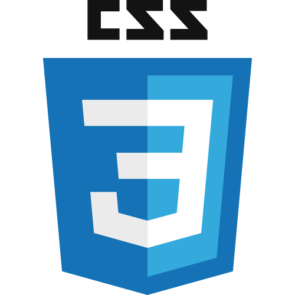

PROFILE
森雄太
Yuta Mori

1990年3月生まれ。
2児の父。
小学校時代にいじめに遭うも、自分の描いたイラストで周りに喜んでもらえ、「こんな自分にも喜んでもらえることがあるんだ」というデザイン＝他者貢献のルーツとなる。
“人”と”デザイン”に興味を惹かれてエンドユーザーと直接関わる販売員や、webデザイナー、webマーケターを経験。
30歳でようやく『自分はデザインの力で課題を解決し、人々の生活を豊かにしたいんだ』という自分の中の軸に気が付く。
MINDE SET
自分にとってデザイン(設計)とは？
他者貢献
-
ミッション
デザインの力で人々の生活を豊かにする
-
ビジョン
生活の中の”困った”を”ありがとう”に変換する「ライフスタイルデザイナー
-

バリュー
常に目的と質にこだわろう。
1つの成功より9つの本気の失敗。
全部出し尽くしてから諦めろ。
迷った時は正しさよりも楽しさ。
自分も相手も大切に。他者貢献≠自己犠牲。
SKIL
-
Photoshop
-
Illustrator
-
adobe XD

Figma
-
HTML
- 
CSS
-
Sass

JQuery